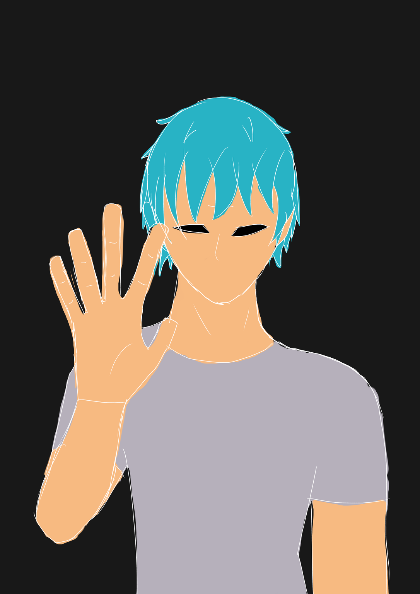

spacer
hallo, ich bin trtl
i am an aspiring coder and artist (yes, even in the ai age) --
i usually dislike popular things --
i enjoy learning --
i enjoy messing around with linux. and learning about linux. and learning how to use linux. and talking about linux. and * linux --

spacer
about me
name: trtl --
location: earth (saddly) --
favorite book: wings of fire --
webite i use the most: youtube --
website that intrigues me the most: LHOHQ --
i really like linux (and bsd's and hiaku and foss), probably a little to much --
favorite linux distro: void linux (specifically the musl ver) --
favorite movies: "next gen", and "a silent voice" --
favorite game: titanfall 2 --
i really like computers --
i reeeallly like mono fonts --
-- like i once had a 30 minute arguement over mono font superiority with a teacher --
i love titanfall2 --
huge death note fan --
photography is really fun, i want to do more of it --
my favorite letter is h --
spacer
spacer
things i want to learn
how to draw well --
how to code --
speaking german --
"dragon" and human anatomy --
linux --
how to make music --
how to sew --
spacer